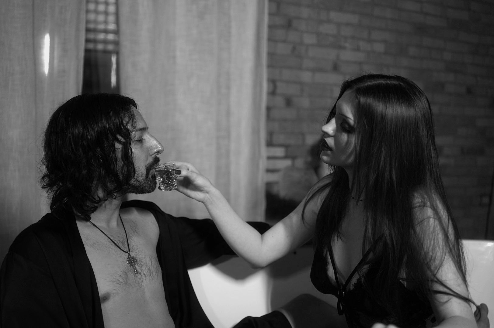

Zander and Sam Lead Precognition Into a New Era of Boundary-Pushing Music and Artistic Vision
MINNEAPOLIS, MN – Multi-instrumentalist, composer, and creative visionary Jacob Alexander Figueroa, known professionally as Zander, together with vocalist and instrumentalist Sam, today announced the next chapter for their band Precognition — a project blending cinematic soundscapes, haunting melodies, and unapologetically raw storytelling.
Founded by Zander, Precognition has evolved into a powerful collaborative force with Sam bringing her distinctive vocal presence and instrumental skill to the forefront. Together, they fuse alternative rock, electronic atmospherics, and poetic lyricism into immersive sonic experiences that defy easy categorization.
“Music has always been my way of transforming chaos into beauty,” said Zander. “With Sam’s voice and creative energy, this new chapter isn’t just about songs — it’s about telling the truth, connecting with people who’ve been through the fire, and building something real that can’t be silenced.”
The announcement comes alongside plans for a multi-platform expansion, including new singles, a music video series, and interactive fan engagement through Precognition’s official website and social channels. The band’s sound has been compared to artists like Nine Inch Nails, Massive Attack, and Deftones, yet stands entirely on its own.
Zander and Sam, whose combined artistic careers span music, photography, and multimedia production, have been recognized for their ability to craft deeply emotive and visually striking works. Their live performances have been described as “immersive experiences” that blur the line between concert and art installation.

Follow Precognition
- 🌐 OfficialPrecognition.com
- 🎬 YouTube
- 🎵 TikTok
About Precognition
Precognition is the creative collaboration of Zander and Sam, merging sonic experimentation with raw emotional storytelling. Known for dynamic live shows and genre-defying sound, the band seeks to create art that resonates deeply with listeners worldwide.
Press Inquiries
For interviews, review requests, or media coverage:
Jacob Alexander Figueroa (“Zander”)
officialprecognition@gmail.com
OfficialPrecognition.com